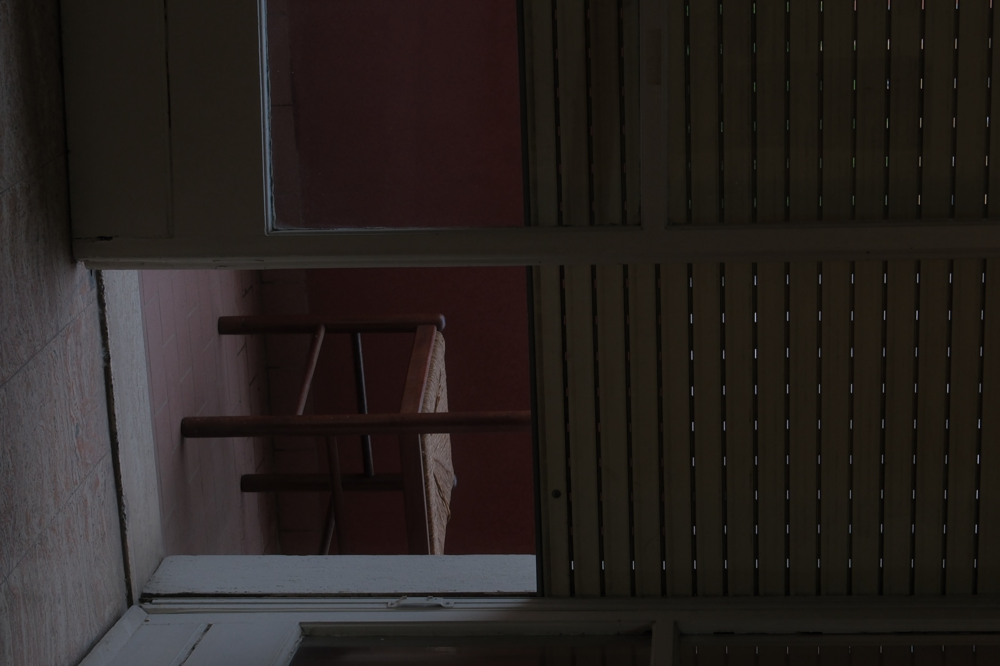
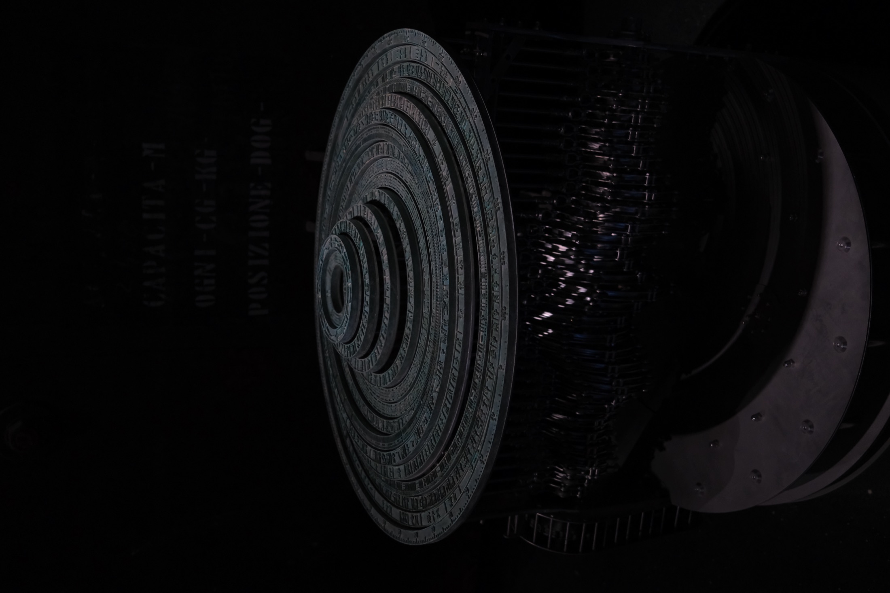
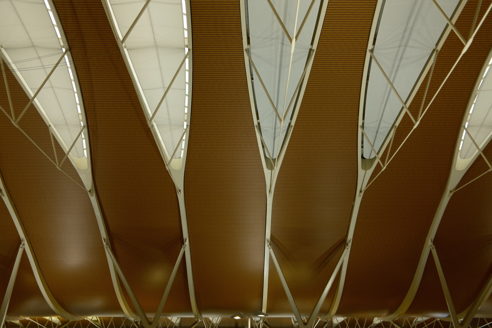

Reading
The room and the chair become ways to photograph absence. Even an exhibition object can behave like an interior when it reanimates an old concept through a contemporary surface.
02 / Interior residue
Home is treated as a quiet extension of the city: a room, a window, a reconstructed idea, and a place that keeps the trace of someone without fully showing them.

The room and the chair become ways to photograph absence. Even an exhibition object can behave like an interior when it reanimates an old concept through a contemporary surface.
Domestic quiet. A private space slightly out of reach, held between shelter and abandonment.


